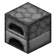

🧰
红石的小站
🎨

MC 熔炉燃料与烧炼
要烧多少东西 → 各燃料各要几个；有多少燃料 → 能烧多少东西
① 我要烧 N 个物品
要烧炼的物品数量
最少煤炭
—
个（每份烧 8 个）
总耗时
—
单熔炉，每件 10 秒
一句话
—
📋 复制这张表
64 个
一箱（1728）
燃料
单份可烧
需要数量
燃烧时长
② 我手上有 X 个燃料
燃料种类
数量
能烧完
—
个物品
理论总热量
—
个物品当量
余火
—
耗时
—
折合
—
燃料热量对照（Java 版）
燃料
可烧物品
游戏刻
时长
💡 数值为
Java 版 1.20+
熔炉燃料表：1 个物品 = 200 刻 = 10 秒，燃料按「整份」消耗，所以 ① 里的数量一律
向上取整
（烧 1 个东西也得扔 3 张地毯）。② 的理论总热量 × 整份 = 可烧物品数，超出整份的零头是最后一份没烧完的火， 熔炉熄灭后作废；若在火焰熄灭前继续投料则不会浪费。高炉/烟熏炉只是把每件 10 秒压到 5 秒，同量燃料烧的物品数不变。 干燥海带块实际是
4001 刻
（20.005 个），本页按 20 计，不影响任何整数结果。 木材类按主世界木头计；竹制品的燃烧值与木板相同但不在本表内。数据范围：Java 版 1.20 – 1.21。